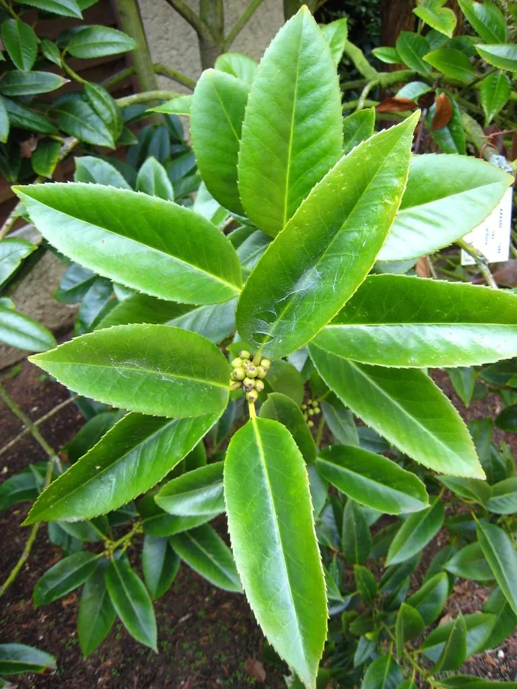

灌木与花木 · 植物界
大叶冬青 Ilex latifolia

冬青科冬青属常绿乔木，叶片宽大厚实、四季常青，嫩叶可制苦丁茶，红果经冬不落，是观叶观果兼用的树种。
- 分类
- 门被子植物门纲木兰纲目冬青目科冬青科属冬青属
- 栖息环境
- 海拔 500–1500 米的山地林中，喜温暖湿润半阴
- 地理分布
- 中国江苏、浙江、安徽、江西、福建、广东、广西、云南等地
- 保护级别
- 暂无评估；未被列入国家重点保护野生植物名录
物种志
大叶冬青为冬青科冬青属常绿乔木，高可达十米，树皮灰褐色，小枝粗壮。叶片互生，厚革质，长椭圆形至披针形，大型，边缘具细锯齿，表面深绿有光泽。花单性，雌雄异株，花小，黄绿色，簇生于叶腋，花期四至五月；核果球形，成熟时鲜红色，果期十至十二月。
大叶冬青分布于中国江苏、浙江、安徽、江西、福建、广东、广西、云南等地，多生于海拔五百至一千五百米的山地林中。它喜温暖湿润和半阴环境，适宜深厚肥沃、排水良好的酸性土壤。叶片宽大厚实、四季常青，可作庭园观赏树；嫩叶经加工可制苦丁茶，味苦回甘，是南方传统的保健饮品；木材细致，可制器具。红果经冬不落，也是冬季观果的优良树种。
形态与习性
- 株高可达 10 m，小枝粗壮
- 花期4–5 月，花小、黄绿色
- 果期10–12 月，核果鲜红
- 光照喜半阴，幼树忌暴晒
- 水分喜湿润，忌积水
- 土壤深厚肥沃的酸性土
- 主要用途嫩叶制苦丁茶，庭园观果树
趣味知识
- 大叶冬青的嫩叶加工后就是苦丁茶，入口极苦，回味却甘凉。
- 它的叶片在冬青属中算得上宽大，长可达二十厘米。
- 大叶冬青雌雄异株，只有雌株在授粉后才能结出满树红果。